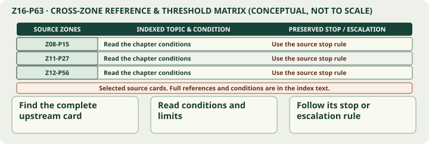

Z16-P63 · Field reference atlas · New manuscript
Encyclopedia Technical Glossary: Q through S
Standardize definitions from Quaking Bog through Spore Print across wetlands, navigation, geology, fire, and mycology.
When it applies · Cross-zone terminology lookup for Q–S technical terms.
Equipment · Full offline reader (Z04, Z05, Z08, Z09, Z11, Z12, Z15), primary zone cards, and local emergency and agency references.

Actions
- Define Q–R terms: Quaking bog (floating sphagnum peat mat over deep cold water, Z08, Z12); Resection (locating map position via two or more terrain bearings, Z11); Rip current (narrow seaward channel escaped parallel to shore, Z12); Runout (diagonal wood grain exiting a handle side causing sudden snap, Z08, Z09).[A07, X12, N03, X15, K09]
- Define S terms: SAME radio (NOAA Weather Radio filtered to county alerts, Z15); Silica dust (respirable quartz, chert particles causing silicosis, Z08); Sneaker wave (abrupt large coastal surge sweeping wet rocks, Z12); Spalling (violent rock shattering from trapped steam or thermal shock, Z08).[A07, D01, R06, X16, R13]
- Define additional S terms: Spore print (diagnostic color deposit on split black, white paper, Z05); Spring pole (bent tensioned sapling storing lethal snap-back energy, Z09); Stipe (mushroom stem, Z05); Supernatant (clarified upper water decanted before microbial treatment, Z04).[A07, B05, K10, W01]
Failure recognition · Confusing supernatant settling with disinfection or missing diagonal handle runout introduces acute field injury.[A07, W01, K09]
Verify · All Q–S definitions remain harmonized with Z04, Z05, Z08, Z09, Z11, Z12, and Z15.[A07]
Stop or change course · Stop substituting glossary glosses for full upstream zone verification steps.[A07, A10]
Evidence and editorial notes
- A07 · USGS · Collecting Rocks: Rock Classes and Mineral Property Basics (USGS GIP)
- Section: Glossary and standardized technical terminology alignment · Conditions: Defining cross-zone geology, navigation, medical, preservation, and botanical terms
Support: Consistent technical definitions prevent terminology drift across all sixteen zones (e.g., conchoidal fracture, declination, water-activity, volva, umbel).
Limitations: Glossary entries clarify terms only and do not add standalone operational instructions. · Conflicting evidence: None noted.
Editorial note: Anchors Z16 glossary cards. · Specialist reviewer: Multi-domain technical editor
Primary source · checked 2026-11-25 - A10 · FEMA / Ready.gov · Make a Plan (current web edition)
- Section: Offline reader navigation, historical lineage, and HOLD transparency · Conditions: Using the complete 16-zone offline archive, zone readers, and print proofs
Support: Navigation aids expose draft status, reconstruction lineage, open diagnostic photo needs, and pending specialist holds on every lookup path.
Limitations: Automated validation checks structure and citations only; publication remains HOLD until qualified human review completes. · Conflicting evidence: None noted.
Editorial note: Anchors Z16 offline navigation & governance index. · Specialist reviewer: Accessibility, print QA, and editorial reviewer
Primary source · checked 2026-11-24 - B05 · MyCoPortal · North American Fungal Voucher Collections Portal (Current web edition)
- Section: Separate fungal voucher collections and microscopic/macro traits · Conditions: Documenting macrofungi across North American collections
Support: Fungal taxonomy requires distinct anatomical schemas (cap, gills/pores/teeth, attachment, ring, volva, spore print, substrate, and often microscopy).
Limitations: Fungal species complexes frequently overlap macroscopically; photos alone cannot confirm edibility. · Conflicting evidence: None noted.
Editorial note: Keeps botanical and fungal schemas separate. · Specialist reviewer: Qualified mycologist
Primary source · checked 2026-11-25 - D01 · FEMA / Ready.gov · Be Informed and Multi-Hazard Preparedness (current web edition)
- Section: Be Informed > Local Hazard Assessment, Alerts, and Jurisdiction Mapping · Conditions: Households preparing for regional multi-hazard emergencies
Support: Identify specific local hazards, sign up for county/municipal opt-in alerts alongside WEA/EAS and NOAA Weather Radio, know official evacuation zone labels, and review household plans twice yearly.
Limitations: Emergency warning systems, siren policies, and shelter locations vary strictly by county and municipality. · Conflicting evidence: None; aligns with T14 and T15.
Editorial note: Establishes jurisdiction-specific alert and planning baseline in Z15. · Specialist reviewer: Emergency management specialist
Primary source · checked 2026-11-24 - K09 · USDA Forest Service · Handtools for Trail Work (0523-2810-MTDC) (agency handbook)
- Section: Cordage, Anchors and Rigging Boundaries · Conditions: Non-life-safety camp lashing, tarps, haul lines and tie-downs
Support: Cordage strength drops significantly at knots, sharp bends, wet fibers, UV exposure and abrasion; inspect fibers before loading and never use unrated camp cord or improvised bindings for life-safety suspension or climbing.
Limitations: No universal breaking strength applies to natural plant fibers or weathered salvaged rope. · Conflicting evidence: Counters folklore claims equating improvised cordage to rated climbing rope.
Editorial note: Separates camp utility lashing/hauling from life-safety rigging. · Specialist reviewer: Rigging safety and materials mechanics
Primary source · checked 2026-11-24 - K10 · USDA Forest Service · Handtools for Trail Work PDF (agency PDF)
- Section: Felling and Overhead Timber Exclusions · Conditions: Camp wood preparation and trail clearing
Support: Do not fell standing trees or work beneath hung-up limbs without specialized training and gear; restrict routine camp woodworking to small sound downed deadwood where lawful.
Limitations: Standing dead trees (snags) fail unpredictably under vibration or wedging. · Conflicting evidence: Aligns with E13 and C17.
Editorial note: Reinforces strict downed-wood-only woodworking boundary. · Specialist reviewer: Forestry safety and land management
Primary source · checked 2026-11-24 - N03 · USGS · What is a Topographic Map (current web edition)
- Section: What is a Topographic Map > Contours and Relief · Conditions: Matching three-dimensional terrain shapes to two-dimensional contour lines
Support: Closed contour rings denote peaks or depressions (hachured), V-patterns point uphill in valleys/drainages and wide spacing marks gentle slopes while tight spacing marks cliffs or steep grades.
Limitations: Dense forest canopy or snow drifts can obscure subtle terrain features shown on the map. · Conflicting evidence: None; core topographic terrain-association evidence.
Editorial note: Supports ridge, valley, saddle and handrail terrain-interpretation cards. · Specialist reviewer: Navigation and cartography
Primary source · checked 2026-11-24 - R06 · NIOSH / CDC · Crystalline Silica Respiratory Dust Hazards (2024)
- Section: Crystalline silica dust respiratory hazard · Conditions: Any grinding, hammering, knapping, or crushing of quartz, chert, sandstone, or granite
Support: Fracturing or abrading silica-bearing stone generates respirable crystalline silica dust linked to silicosis and lung disease.
Limitations: Outdoor breeze does not eliminate breathing-zone dust; avoid dry grinding/crushing and use eye and respiratory protection in authorized instruction. · Conflicting evidence: None noted.
Editorial note: Mandatory Z08 silica/eye safety gate. · Specialist reviewer: Industrial hygienist and geologist
Primary source · checked 2026-11-25 - R13 · National Park Service · Rocks and Minerals Geological Overview (Current web edition)
- Section: Thermal shock, moisture spalling, and rock weathering · Conditions: Porous, laminated, or water-saturated stones exposed to heat or freeze-thaw
Support: Water-saturated, porous, or layered rocks can fracture violently when rapidly heated or subjected to freeze-thaw stress.
Limitations: Dry surface appearance does not prove internal pores are moisture-free; keep unverified rocks out of fires and hot vessels. · Conflicting evidence: None noted.
Editorial note: Reinforces Z03/Z08 wet-rock spalling stop. · Specialist reviewer: Geologist and fire safety reviewer
Primary source · checked 2026-11-25 - W01 · CDC · How to Make Water Safe in an Emergency (2024-09-19)
- Section: Water with fuel or toxic chemicals in it · Conditions: Suspected fuel, toxic chemicals or radioactive contamination
Support: Use a different safe supply. Standard boiling and microbial disinfection do not make this water safe.
Limitations: Does not list contaminant-specific lab remediation; applies to emergency consumer decisions only. · Conflicting evidence: None across CDC/EPA emergency guidance.
Editorial note: Used as upstream hard-stop gate prior to any field treatment card. · Specialist reviewer: Drinking-water safety and public health
Primary source · checked 2026-11-24 - X12 · US EPA · What is a Wetland (current web edition)
- Section: What is a Wetland > Bogs, Fens, Swamps and Marshes · Conditions: Upper Midwest boreal bogs, marshes, beaver ponds and coastal wetlands
Support: Wetlands feature saturated hydric soils, floating vegetation mats (quaking bogs), hidden channels and fluctuating water tables that conceal deep muck, unstable footing and slow-draining floodwaters.
Limitations: Winter ice over bogs and wetlands is especially erratic due to decaying organic heat and seepage. · Conflicting evidence: Aligns with B014-P12 and NPS-WETLAND.
Editorial note: Core wetland terrain and quaking-bog hazard evidence in Z12. · Specialist reviewer: Wetland ecology and search and rescue
Primary source · checked 2026-11-24 - X15 · NOAA NOS · Tides and Water Levels Education Tutorial (current web edition)
- Section: Tides and Water Levels > Tidal Range, Cutoffs and Currents · Conditions: Ocean coastlines, sea caves, tidal flats and rocky headlands
Support: Tidal cycles raise water levels rapidly along shallow flats, narrow coves and rocky headlands, trapping hikers against cliffs and generating strong reversing currents in inlets; verify local tide tables before entering coastal routes.
Limitations: Wind-driven storm surge and king tides push water well above normal predicted high-tide marks. · Conflicting evidence: None; pairs with NOAA-COAST.
Editorial note: Grounds tidal-cutoff, headland and mudflat planning cards in Z12. · Specialist reviewer: Coastal navigation and marine safety
Primary source · checked 2026-11-24 - X16 · NWS · Tsunami Safety (current web edition)
- Section: Tsunami Safety > Natural Warning Signs and Immediate High-Ground Evacuation · Conditions: Earthquake-prone ocean coastlines and coastal estuaries
Support: Strong or long coastal ground shaking, a loud ocean roar or sudden unusual ocean recession are natural tsunami warnings—move immediately on foot inland and to high ground without waiting for official sirens, and stay away until officials issue an all-clear (multiple waves arrive over hours).
Limitations: A first receding or modest wave is often followed by much larger destructive surges. · Conflicting evidence: None; aligns with READY-TSUNAMI.
Editorial note: Establishes coastal tsunami immediate-evacuation stop conditions. · Specialist reviewer: Coastal emergency management and geology
Primary source · checked 2026-11-24
Source lineage · New manuscript (Z16 P20 glossary) · Classification · New manuscript.